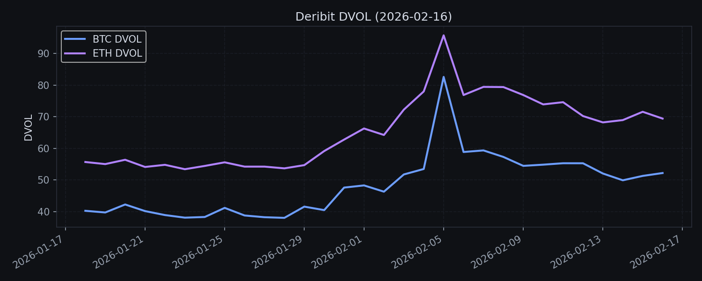

CEX 每日市场脉搏
区间：2026-02-16 至 2026-02-16 ｜ 生成时间：2026-02-23 09:48:52Z
数据可用性说明
- CMC 历史全局指标获取失败：HTTP 403: {
"status": {
"timestamp": "2026-02-23T09:48:44.616Z",
"error_code": 1006,
"error_message": "Your API Key subscription plan doesn't support this endpoint.",
"elapsed": 0,
"credit_count": 0
}
}
- CoinGecko 市值/成交量时间序列获取失败：HTTP 401: {"status":{"timestamp":"2026-02-23T09:48:46.148+00:00","error_code":10005,"error_message":"This request is limited to PRO API subscribers. Please visit https://www.coingecko.com/en/api/pricing to subscribe to our API plan to access exclusive endpoints."}}
关键结论
- 隐含波动率（DVOL）走高，变动 +29.73%。
市场结构
本期总市值、成交量与 BTC 统治力如下。
| 指标 | 起点 | 终点 | 变化 |
|---|
| 总市值 | N/A | N/A | N/A |
| 24h 成交量 | N/A | N/A | N/A |
| BTC 统治力 | N/A | 58.21% | 当前值 |
衍生品（Deribit）
永续合约 24h 成交量、OI 与资金费率概览。
| 品种 | 24h 成交量 | 未平仓量(OI) | 当前资金费率 |
|---|
| BTC 永续 | $441.60M | $1.21B | 0.00% |
| ETH 永续 | $125.94M | $378.72M | 0.00% |
Deribit DVOL

指标模板（可扩展）
与 PDF 版式一致的 CEX 市场脉搏监测模板，可按数据源补齐。
| 指标维度 | 核心监测数据 | 数据源 | 业务关联解读 |
|---|
| 市场结构 | 总市值变动 / 24h 成交量 / BTC 统治力 | CMC / CG | 成交量决定手续费收入预期，统治力反映资金集中度 |
| 衍生品 | OI / 资金费率 / DVOL | Deribit | 高 OI + 正费率可能积累拥挤风险 |
| 链上资金 | 交易所净流入 / 稳定币供给 | N/A | 净流入通常对应抛压 |
| 情绪指标 | 恐惧与贪婪 / 社交主导率 | N/A | 极端贪婪常是短期顶部信号 |
| 叙事热点 | 板块涨幅 / 热门叙事 | CoinGecko | 指引资金偏好与潜在热点 |
资金与稳定币
稳定币与衍生品成交量的最新值（如可用）。
| 指标 | 当前值 |
|---|
| 稳定币市值 | $285.33B |
| 稳定币 24h 成交量 | $83.02B |
| 衍生品 24h 成交量 | $756.17B |